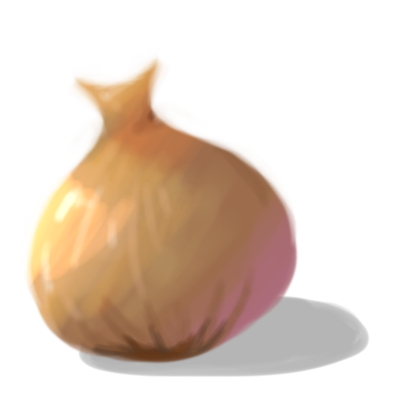

Welcome to the S2 project website of the Epicala Studio group !
At Epita, all first-year students go through an unavoidable step : the S2 project. Through this website, you can join us in this adventure full of twists and turns and follow our development !
That's us ! A group of four motivated students immersed in this mythological quest. As you will discover in these pages, the team has evolved, but our spirit has remained the same. You will find on this website our group's history as well as a presentation of the members.
We have chosen to create a video game : Mystic Origin ! It is a narrative RPG based on the theme of mythology. For more details, go to the following page !
